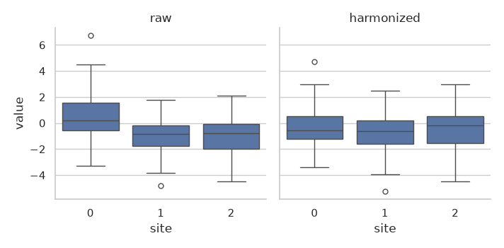

Note
Go to the end to download the full example code.
Harmonization in scikit-learn pipelines#
A harmonizer must know the site of every sample, both when it is fitted on the training data and when it transforms the test data: the site effect of a test subject can only be removed if its site is known. Harmonizers that keep biological effects also need the covariates (e.g., age) of every sample.
scikit-learn only passes X and y through a
Pipeline, and only splits X and y into
cross-validation folds. This example shows the way to use UniHarmony that works
with every scikit-learn tool: keep the sites and covariates as columns of a
DataFrame and name them in the constructor. It then compares it with the
alternative, scikit-learn’s metadata routing, and shows where routing fails.
Terms used below:
fold: one of the train/test splits of a cross-validation.
scorer: the function that evaluates a fitted model on a test fold (
scoring="roc_auc", …). It callspredict/predict_proba.metadata routing: a scikit-learn mechanism to pass extra arguments (here
sites) to the steps of a pipeline.
Imports#
import warnings
import matplotlib.pyplot as plt
import numpy as np
import pandas as pd
import seaborn as sns
import sklearn
from sklearn.linear_model import LogisticRegression
from sklearn.model_selection import GridSearchCV, StratifiedKFold, cross_val_predict, cross_validate
from sklearn.pipeline import make_pipeline
from sklearn.preprocessing import StandardScaler
from uniharmony import verbosity
from uniharmony.combat import NeuroComBat
from uniharmony.datasets import make_multisite_classification
verbosity("error")
sns.set_theme(style="whitegrid")
Data: three sites with different class balances#
The class balance differs across sites (25%, 50% and 75% of class 1), so the site alone predicts the class. Each site also shifts and scales the features, and age affects them.
X, y, sites, truth = make_multisite_classification(
n_sites=3,
n_samples=300,
n_features=5,
balance_per_site=[[0.75, 0.25], [0.5, 0.5], [0.25, 0.75]],
site_effect={"location": 3.0, "scale": 3.0},
covariates=["age", "sex"],
random_state=0,
return_ground_truth=True,
)
covariates = truth["covariates"]
features = [f"feature_{j}" for j in range(X.shape[1])]
df = pd.DataFrame(X, columns=features)
df["site"] = sites
df["age"] = covariates["age"]
df.head()
The sites and covariates as columns#
site_column and continuous_columns name the metadata columns. The
transformer reads them from X, removes them, and returns the harmonized
features only. With set_output(transform="pandas") the output keeps the
feature names and the index of X.
combat = NeuroComBat(site_column="site", continuous_columns=["age"]).set_output(transform="pandas")
df_harmonized = combat.fit_transform(df)
print("Input columns: ", list(combat.feature_names_in_))
print("Output columns:", list(combat.get_feature_names_out()))
df_harmonized.head()
Input columns: ['feature_0', 'feature_1', 'feature_2', 'feature_3', 'feature_4', 'site', 'age']
Output columns: ['feature_0', 'feature_1', 'feature_2', 'feature_3', 'feature_4']
The same result with keywords (for direct calls on NumPy arrays):
X_keywords = NeuroComBat().fit_transform(df[features].to_numpy(), sites=sites, continuous_covariates=df[["age"]])
print("Largest difference between the two paths:", np.abs(X_keywords - df_harmonized.to_numpy()).max())
Largest difference between the two paths: 0.0
Cross-validation with scorers#
In a pipeline, the harmonizer is the first step. The folds split the site and age columns together with the features, so every test fold is harmonized with its own sites, and any scorer can be used.
The folds are shuffled and stratified: every site must also be in the
training folds, because a site unseen during fit cannot be harmonized.
cv = StratifiedKFold(5, shuffle=True, random_state=0)
pipe = make_pipeline(NeuroComBat(site_column="site", continuous_columns=["age"]), StandardScaler(), LogisticRegression())
scores = cross_validate(pipe, df, y, cv=cv, scoring=["roc_auc", "balanced_accuracy"])
print(f"ROC AUC: {scores['test_roc_auc'].mean():.3f} ± {scores['test_roc_auc'].std():.3f}")
print(f"Balanced accuracy: {scores['test_balanced_accuracy'].mean():.3f}")
ROC AUC: 0.984 ± 0.011
Balanced accuracy: 0.940
cross_val_predict and GridSearchCV work the same way. All numerical
options of the harmonizers are constructor parameters, so they can be tuned:
proba = cross_val_predict(pipe, df, y, cv=cv, method="predict_proba")
search = GridSearchCV(
pipe,
{"neurocombat__empirical_bayes": [True, False], "logisticregression__C": [0.01, 1.0, 100.0]},
cv=cv,
scoring="roc_auc",
)
search.fit(df, y)
print("Best parameters:", search.best_params_)
print(f"Best ROC AUC: {search.best_score_:.3f}")
Best parameters: {'logisticregression__C': 100.0, 'neurocombat__empirical_bayes': True}
Best ROC AUC: 0.986
Why not metadata routing?#
The alternative keeps X numeric and routes sites as an extra argument.
UniHarmony’s estimators request their data keywords by default, so only the
global switch is needed. It works with the estimator’s own score:
X_array = df[features].to_numpy()
routed = make_pipeline(NeuroComBat(), StandardScaler(), LogisticRegression())
with sklearn.config_context(enable_metadata_routing=True):
default_score = cross_validate(routed, X_array, y, cv=cv, params={"sites": sites})["test_score"]
print(f"Routing, default score (accuracy): {default_score.mean():.3f}")
Routing, default score (accuracy): 0.940
But a scorer calls predict_proba(X) without the sites: scikit-learn
does not route metadata to the scorers. The harmonizer cannot transform the
test fold, the error is caught, and the score silently becomes NaN (with a
warning only). cross_val_predict does not route metadata to predict
either and fails.
with sklearn.config_context(enable_metadata_routing=True), warnings.catch_warnings():
warnings.simplefilter("ignore")
routed_auc = cross_validate(routed, X_array, y, cv=cv, params={"sites": sites}, scoring="roc_auc")["test_score"]
print("Routing, ROC AUC per fold:", routed_auc)
with sklearn.config_context(enable_metadata_routing=True):
try:
cross_val_predict(routed, X_array, y, cv=cv, params={"sites": sites})
except ValueError as error:
print("Routing, cross_val_predict:", type(error).__name__)
with sklearn.config_context(enable_metadata_routing=True), warnings.catch_warnings():
warnings.simplefilter("ignore")
routed_search = GridSearchCV(routed, {"logisticregression__C": [0.01, 1.0, 100.0]}, cv=cv, scoring="roc_auc")
routed_search.fit(X_array, y, sites=sites)
print("Routing, GridSearchCV best_score_:", routed_search.best_score_)
Routing, ROC AUC per fold: [nan nan nan nan nan]
Routing, cross_val_predict: ValueError
Routing, GridSearchCV best_score_: nan
Summary of the two ways#
summary = pd.DataFrame(
{
"columns of X": ["works", "works", "works", "works"],
"metadata routing": ["works", "NaN", "error", "NaN"],
},
index=["cross_validate, default score", "cross_validate, scorer", "cross_val_predict", "GridSearchCV, scorer"],
)
summary
The harmonized features#
Before and after harmonization (training data), the first feature by site: the site effects on location and scale are removed, the class effect is kept.
plot_df = pd.concat(
[
pd.DataFrame({"value": df["feature_0"], "site": sites, "data": "raw"}),
pd.DataFrame({"value": df_harmonized["feature_0"], "site": sites, "data": "harmonized"}),
]
)
grid = sns.catplot(data=plot_df, x="site", y="value", col="data", kind="box", height=3.5)
grid.set_titles("{col_name}")
plt.show()

Total running time of the script: (0 minutes 1.542 seconds)